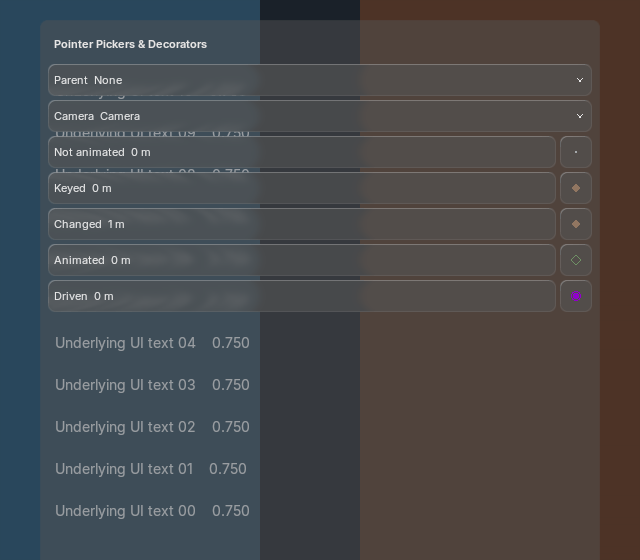
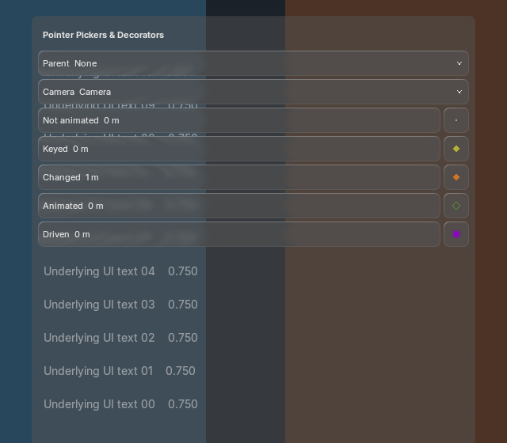
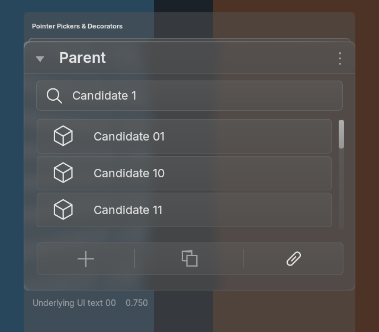
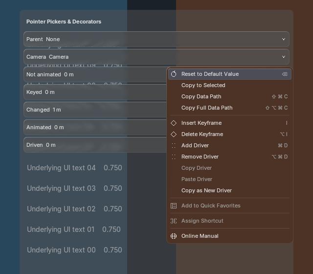

Actual Blender 5.2.2 Metal output. Compact ID pointer fields open the shared searchable picker. Decorators show empty, keyed, changed, animated and driven states, using the active Blender theme. Strong liquid glass, source springs, title typography and owner-aware right-click menus are shared with existing controls.




Real window tests also cover pointer-row Select/Copy Name context, keyboard selection, Escape dismissal, key insertion/deletion and host motion disable. Every one of 100 sampled frames matches between native-batched and standalone text rendering on each tested Blender version. Underlying field text is flushed before overlays; body and title text follow their owning transform.
The warm capture retains one backdrop, one strong blur, five offscreens, the same shaders/batches/fonts and one layout. No backdrop capture or blur is added during animation. Timing records measure CPU paint submission for this small workload; they do not establish all-platform source-level performance.
Visual acceptance remains open. These are implementation captures using the existing control family, not an exact generated-reference comparison. Unexposed native pointer polls require a host policy. Non-ID pointers, eyedroppers, drag/drop, NLA/layer blending and complete property/layout semantics remain open.
5.2 capture/timing/hashes · 5.1 capture/timing/hashes · 5.2 RNA checks · 5.1 RNA checks · 5.2 actual window input · 5.1 actual window input · Official source audit · Supported behavior and remaining gaps · Previous menu motion QA